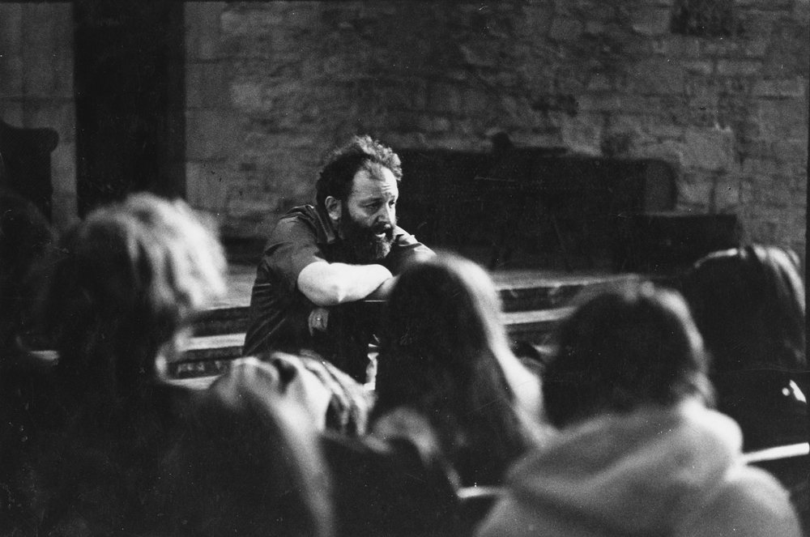

GLV and metatpopulation dynamics

Richard Levins (1930-2016). Born in Brooklyn, New York, he studied agriculture and mathematics at Cornell. Early on, influenced by geneticist and polymath Haldane, he became a Marxist activist. Upon graduation, having been blacklisted as a communist (and with the Korean War raging), he moved to Puerto Rico with his wife, and set up a farm. In his spare time, he conducted experiments on fruit flies, organized anti-colonialist rallies and anti-war protests, and taught at the University of Puerto Rico. In 1964, he was invited to Cuba to help organize the biology department of the University of Havana. He received his doctorate from Columbia University in 1965. In 1967 he moved to the University of Chicago, where he joined Richard Lewontin—whith whom he established a lifelong collaboration. They both moved to Harvard in the late 1970s.
It is impossible to summarize his numerous contributions to ecology, mathematics, political science, and the philosophy of science. He has inspired countless ecologists, and his approach and style are still visible in many of the research programs being carried out today. Of particular interest for this class, his theory of evolution in a changing environment (Levins (1968)), the development of the idea of limiting similarity (MacArthur and Levins (1967)), his work on metapopulation dynamics (Levins (1969)), and the development of Loop Analysis (i.e., a qualitative theory for dynamical systems, Puccia and Levins (2013)).
Metapopulations
In 1969, Richard Levins—then a professor at U. Chicago—proposed a simple model for a “metapopulation”, i.e., a “population of populations in which local extinctions are balanced by remigration from other populations” (Levins (1969)).
The model is very simple. Suppose that there are very many patches of suitable habitat, and that we track the proportion of patches occupied by a certain species, \(p(t)\). Two processes affect the proportion of occupied patches: extinction, turning an occupied patch into a vacant patch, and colonization, turning a vacant patch into an occupied patch. For the simplest case, suppose that occupied patches can send “propagules” to empty patches at a fixed rate \(\gamma > 0\), and that the rate at which local populations go extinct is the same for all patches, \(\delta > 0\).
Call \(q(t) = 1-p(t)\) the proportion of vacant patches. Then, the dynamics are described by the equations:
\[ \begin{cases} \dot{p}(t) = -\delta p(t) + \gamma p(t)q(t)\\ \dot{q}(t) = \delta p(t) - \gamma p(t)q(t)\\ \end{cases} \]
in which we assume mass-action (like in GLV). Note that the two equations sum to zero (i.e., we’re in a zero-sum setting), and therefore we can substitute \(q(t) = 1-p(t)\) to obtain:
\[ \dot{p} = p(-\delta + \gamma q) = p(\gamma - \delta - \gamma p) \]
which is the usual equation for the logistic growth, with growth rate \(\gamma - \delta\) and self-interaction \(\gamma\). As such, as long as \(\gamma > \delta\), the proportion of inhabited patches will converge to \(p^\star = 1 - \delta/\gamma > 0\), which is globally stable.
Colonization-competition tradeoff
Levins’ model was extended in a number of ways. One of the most interesting cases is that in which we have \(n\) species, each characterized by an extinction and a colonization rate, and there is a trade-off such that better colonizers are worse competitors, and vice versa. In particular:
- \(p_i\) is the proportion of patches occupied by population \(i\), with \(\sum_j p_j \leq 1\)
- \(m_i\) is the extinction rate for population \(i\)
- \(c_i\) is the colonization rate for population \(i\)
- each species can colonize patches occupied by inferior competitors (i.e., these patches “look” empty to them)
- competitive abilities are inversely correlated with colonization rates, i.e., if \(c_j < c_i\), then \(j\) is a superior competitor
The model is GLV
Computing equilibria
Random parameters
Asymptotics
References and further readings
TODO
May R.M. 1972. Will a large complex system be stable? Nature 238:413-414
McCann, K.S. 2000. The diversity - stability debate. Nature 405:228-233